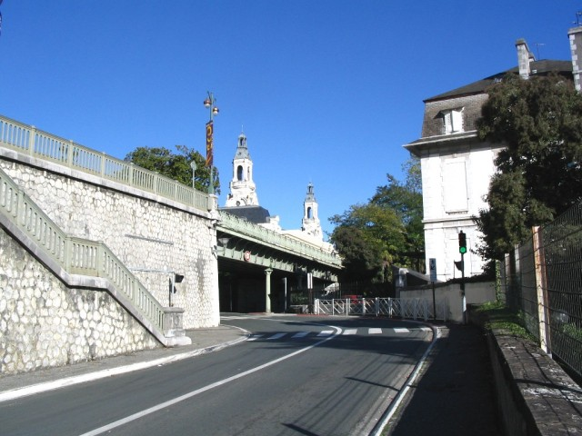
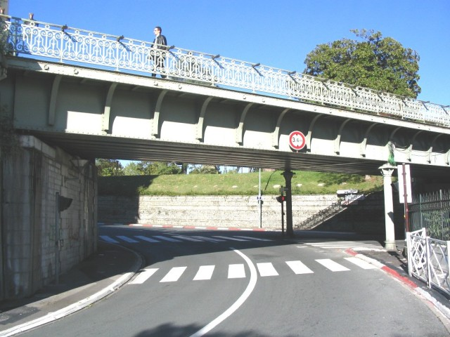
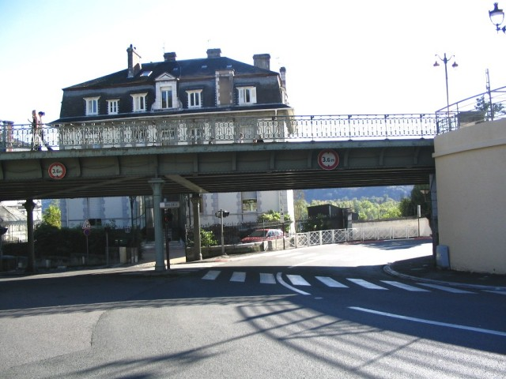
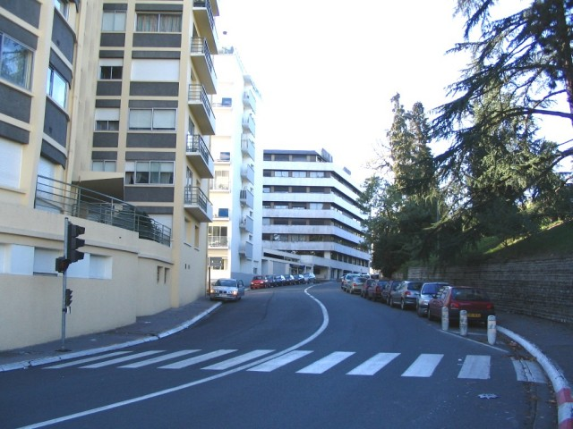
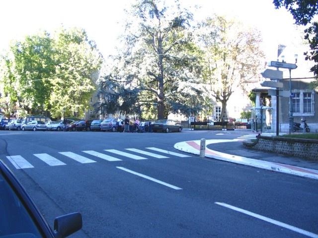
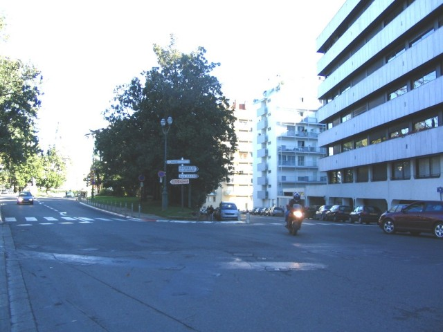

Numbers on map indicate the location of where the photographs were taken.
Pau - Pont Oscar & Lycée (Page 2 of 5)
|| Contents || La Gare | Pont Oscar & Lycée | Casino & Foch | Bussion & Chicane | Ave. Gaston Lacoste || Home
Numbers on map indicate the location of where the photographs were taken.
Return to racingcircuits.net's Photo Archive Main Index

08 - Oscar bridge (Pont Oscar)
and the two towers of the casino.

09 - Oscar bridge.

10 - Oscar bridge looking back.

11 - Exit of Oscar bridge, continuing uphill
on the Avenue Léon Say.

12 - The hairpin or School corner (Virage
du Lycée).

13 - The hairpin is the end of the uphill
(look at the upgrade difference). It's a very tight and difficult corner. On several
occasions, the track has been blocked here during the first lap.
Photographs & text ©Michel Marti. Reproduced here with kind permission.